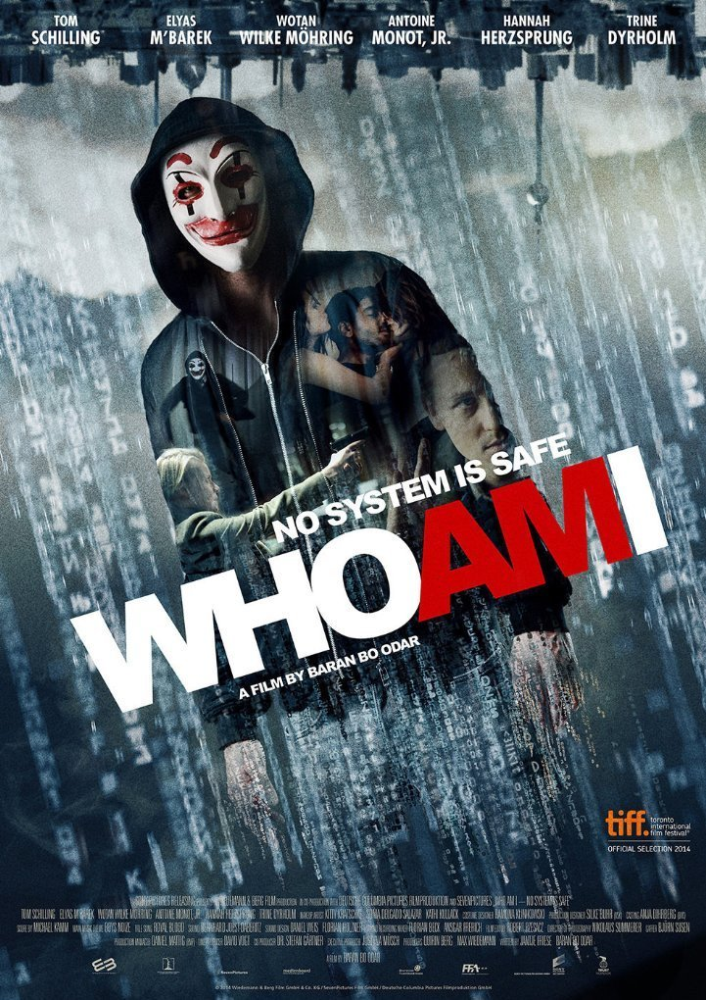

BACK

WHO AM I (2016)
Baran Bo Odar
Drama
Crime
thriller
히틀러 옹호 집단부터 금융권, 제약회사, 신문사, 가구회사 그리고 포느로 사이트까지 해커 집단 클레이에 당했다. 범죄 조직이 연루된 사건인가? 철부지 10대들의 장난인가? 그저 재미를 위해 모인 루저 해커 4인방, 그들이 진짜 원하는 단 한가지가 생겼다 비로 해커들의 슈퍼히어로 MRX의 인정을 받는 것! 해커 조직 클레이는 엄청난 사건을 계획한다.